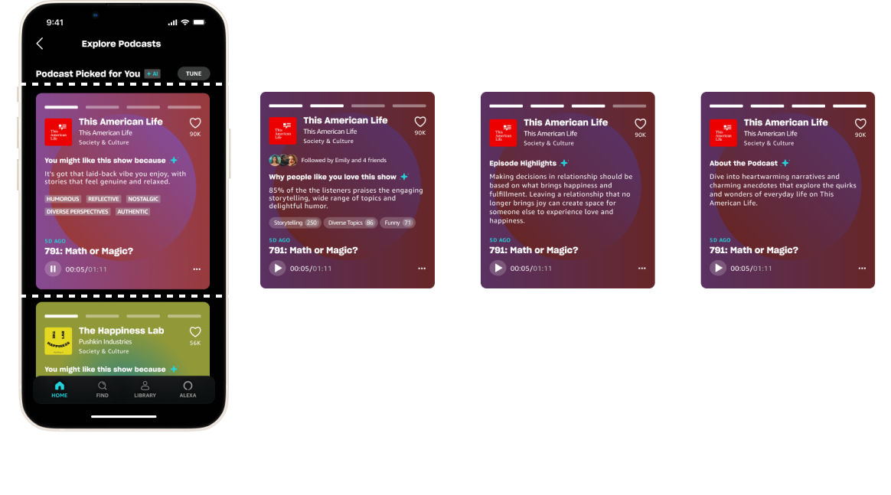
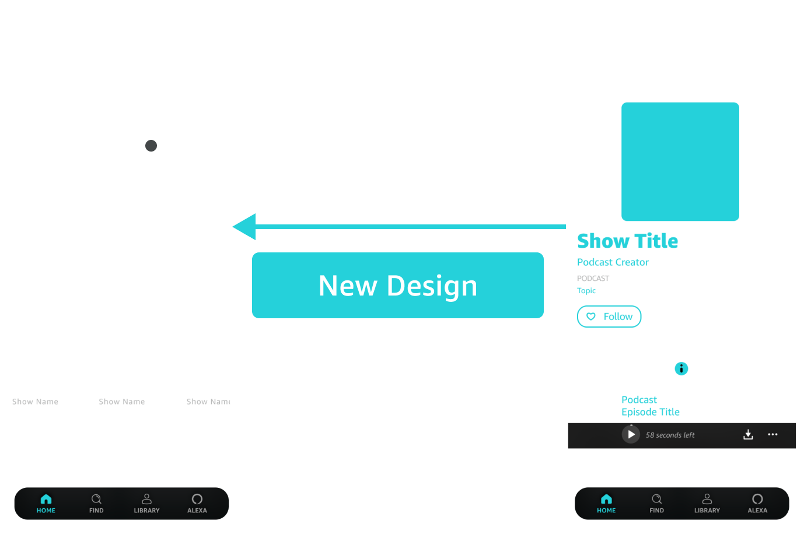

Podcast Picks, an AI-driven podcast discovery feature, won Best Application of AI for Amazon Music's 2024 Design Challenge.
Meng and I each conducted four user interviews, and we discovered that podcast listeners rarely discover new podcasts in the streaming apps. When users tried, they left disappointed and feeling like they spent a lot of effort assessing new podcasts without successfully finding one they enjoyed. We identified two key issues with the podcast discovery experience that make it hard to sift through podcasts.
Recommendation algorithms match podcast topics well but need to catch up on matching tones. Listeners were disappointed when recommendations were too casual or too formal for their preferences and frustrated that they only realized this after they started listening to the podcast.
Looking at the current landscape, podcast streaming platforms only offer two ways to assess podcast tone: through listening to a snippet or reading a transcript, both of which are time-consuming.
The most straightforward tone indicators are the pills at the bottom of the text that highlight the podcast style. The card background will generate a visualization that abstractly represents the podcast tone. Lastly, we kept the sound bite, as it remains one of the best ways a listener can sample the podcast.
During our user interviews, we identified key factors listeners use to assess new podcasts that could be improved in the podcast discovery experience: topic, tone, content, and reviews.
Using card-sorting, I determined which factors are most helpful in assessing a new podcast and which to prioritize. We learned users are especially curious to learn why the podcast is being recommended, so we added it to our list of assessment factors.
As discussed in issue #1, tone analysis is only available using snippets and transcripts. Tone summaries would reduce user burden.
There needs to be quality control for episode summaries written by podcast creators, impacting length and relevance to new listeners. AI can use podcast transcripts to refine summaries.
Few podcast streaming platforms incorporate reviews into their features. AI can gather reviews from various sources to provide a glimpse into what others think about the podcast.
Listeners want to understand why specific podcasts are being recommended to them, which isn't being provided now.
The current flow requires users to click into podcast shows to access show information. We bring relevant and personalized AI-generated podcast information out from the podcast show page into the explore page.
Implementing a carousel allows users to access more information quickly if they're interested and skip past podcasts if they're not. I used paper prototype testing to arrive at the final card layout.
I conducted 3 user tests and found that participants wanted more obvious indicators that the AI selects and writes based on users’ preferences. We rewrote the headers to emphasize that recommendations and summaries are personalized.
For the design challenge, our scope was limited to the listener's experience. Given more time, Meng and I would have loved to explore how creators would respond to AI representing them and how the design translates across different devices.
As a part of a design challenge, Meng and I only had 4 weeks to complete the entire project from prompt to presentation. With our short time frame in mind, we outlined milestones for each phase of our projects. Inevitably, our design process wasn't linear but we were always able to move forward with each conversation.